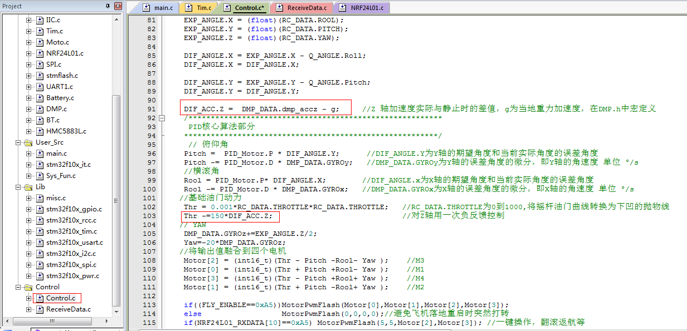
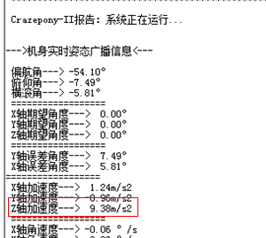
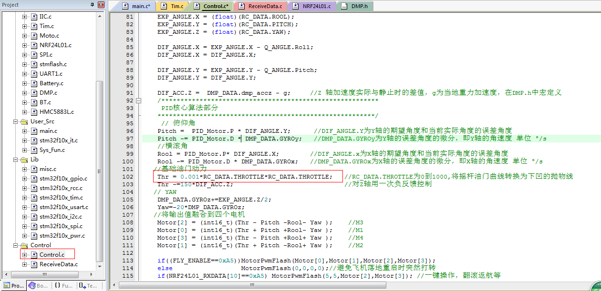

雖然我們已經努力將機身參數設計成沒有個體差異,但是還是避免不了一些電阻電容上有誤差。直接體現在MPU6050輸出的姿態AD值上有個體差異，下面談一談用戶拿到飛機以後，怎樣保證飛機起飛降落過程具有粘滯性的問題
什麼叫粘滯性？就是說，飛機上升的時候，不會因為油門突然加大而突然猛升，也不會因為油門不小心拉低過快導致飛機快速跌落到地面，那麼怎樣才能達到這樣的效果呢？
我們都知道，飛機在空中的任何一個動作或者姿態，都會被姿態傳感器採集到，那麼飛機上升和下降這個動作，對應的是哪個物理量在變化呢？Z軸的速度？還是飛機的高度？ 這兩者都在變化，但是姿態傳感器都不能直接給出，然而，Z軸的加速度是姿態傳感器可以直接給出的
下面我們來理一下這個過程Z軸加速度是怎麼變化的。
中學畢業的人都知道這樣一件事情就是關於失重和超重，飛機加速上升這個過程，Z軸的加速度會大於靜止時的加速度9.8m/s2，飛機加速下降這個過程，Z軸加速會小於9.8m/s2 ，這個物理量，可以由傳感器直接得到，而這個物理量的變化，恰恰就能得到飛機是正在上升還是正在下降，那麼上升的時候，程序控制它油門增加量不要變化那麼快，下降的時候，程序控制它油門減少量不要減那麼快。So…
學過大學相關控制理論的人都知道，這種控制方式叫做負反饋。
對應到程序就是這樣的：

Thr是一個油門的全局變量，在Thr被遙控數據賦值以後，再對Thr進行一次減操作，減去一個誤差量DIF_ACC.Z，DIF_ACC.Z是Z軸的當前加速度減去靜止時的加速的差值。當飛機上升時，DIF_ACC.Z是一個正數，Thr減去一個正數，Thr就會比遙控實際賦值要小，體現出來的效果就是上升不會那麼衝；同理，下降時DIF_ACC.Z為一個負數，Thr減去一個負數，相當於加上一個正數，Thr就比遙控實際賦值要大，體現出的效果就是下降不會很急。
於是，綜上的描述，飛機的飛行體現出粘滯的效果，便於操控，也安全了許多
所以，在用戶拿到手後，如果感覺操作起來不是那麼方便，可以打開串口助手看看這裡：

將Crazepony水平靜止放置，然後看看這裡打印的Z軸加速度值是多少，將源代碼的靜止重力加速度值g，修改成串口助手裡看到的那個值就好了，這是屬於一個初始人工校準過程，我們後續會考慮實現一個學習算法來替代這個過程，它將不會再需要用戶介入，你只需要開一個電源開關，學習算法會自我學習，將學習得到的最優參數存放在內部的EEPROM中。
在Crazepony最初的幾個版本中，我並沒有油門曲線這個概念，遙控給多少，就直接給PWM輸出，根本不做任何可能的處理。在後來的飛行體驗中，慢慢發現。油門搖桿的前半程，很容易突然推很多，導致飛機一下衝很高。於是，在跟大家的交流中發現，將遙控送給的油門值曲線化以後再給PWM輸出，這樣的話。就能避免這個問題了。

很顯然，我將油門曲線做成了一個下凹的拋物線。拋物線方程為： y=0.001X2，即Thr=0.001（ RC_DATA.THROTTLE）2 ，RC_DATA.THROTTLE的取值範圍是0-999，Thr的取值範圍也是0-999，這樣一來，將遙控的油門搖桿取值範圍，跟飛機實際得到的油門量做了一個一一映射。最大值和最小值都是一樣的，但是處理後的油門曲線是一條下凹的曲線，和原來線性對應相比，優勢大家自己實際體會吧